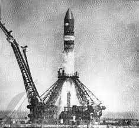

День космонавтики |
Первый длительный полет в космосОписаниеГе́рман Степа́нович Тито́в (11 сентября 1935, Верх-Жилино — 20 сентября 2000[1], Москва) — советский космонавт, первый человек, совершивший длительный космический полёт (более суток), второй советский космонавт, второй человек в мире, совершивший орбитальный космический полёт. Описание полета С 6 по 7 августа 1961 года Герман Титов выполнял первый в истории длительный космический полёт продолжительностью 1 сутки 1 час на космическом корабле «Восток-2», сделав 17 оборотов вокруг Земли, пролетев более 700 тысяч километров. В полёте имел позывной «Орёл». Спускаемый аппарат приземлился вблизи города Красный Кут (Саратовская область)[5]. Целью полета было исследование влияния на человека невесомости, поведение организма при приеме пищи и сне в таких условиях, а также ручное управление аппаратом, съемка с орбиты и постоянная радиосвязь с Землей. Впоследствии, благодаря показателям Титова, программа подготовки космонавтов была существенно скорректирована[5]. На момент полёта Герману Титову было 25 лет и 330 дней — он самый молодой среди всех людей, совершивших орбитальный полёт. |
Меню |